BlockyCraft Survival
Discover the Mysteries of the Island of Enigmas — A New Minecraft-Style Adventure!
Step into an exciting new world inspired by Minecraft, where you and your friends become the heroes of the Island of Enigmas. This mysterious island was once inhabited thousands of years ago by ancient builders fascinated by islands and puzzles. To prove their greatness, these ancients constructed 15 challenging levels full of secrets and traps.
Your Mission: Explore the island and conquer all 15 levels crafted by these ancient architects. But this is no ordinary challenge — each level is a complex puzzle, designed to test your skill, strategy, and teamwork.
Unique Features:
-
Popular Minecraft Skins: Play as your favorite Minecraft skins, bringing familiar faces into this thrilling adventure.
-
Pet Companions: Use unique pets to help you along the way. Rare pets provide a powerful boost every 5 minutes, enhancing your abilities and survival chances.
-
Common Pets: Though weaker, common pets have a 1% chance to teleport you to a random level, adding an element of surprise. These pets are rare and difficult to find.
-
Increasing Difficulty: After beating all 15 levels, the game doesn't end. Instead, completed levels become harder, challenging even the most skilled players to improve and strategize further.
-
Epic Treasure Hunt: Upon completing level 15, face the Temple Ghost — a fierce guardian of priceless treasures. Defeat it to claim your reward!
-
But beware, spirits attack on your way back, and a final boss battle awaits you.
Dive into a world where ancient mysteries meet modern gameplay. Are you ready to conquer the Island of Enigmas and become a legend?
Heroes of the game
-

Uzumaki Naruto
— Power of the Nine-Tails
Uzumaki Naruto is a legendary ninja with an unbreakable spirit and a heart full of determination. Arriving on the Island of Enigmas, he sets off on his journey armed with a sharp katana and deadly shurikens. But his true strength lies within — the power of the Nine-Tailed Fox sealed inside him.
Special Ability:
Every minute, Naruto taps into the power of the Nine-Tails, transforming into a super-charged form. During this transformation, his strength and speed increase dramatically, and his HP is greatly boosted for 10 seconds. This form allows him to break through the toughest traps and deadliest foes.
Equipment:
Katana — for close combat
Shurikens — for ranged attacks
Naruto is the perfect choice for players seeking a balance of speed, power, and legendary ninja energy.
-
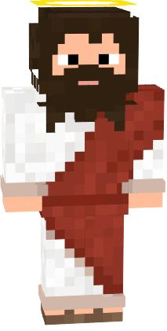
Jesus
— The Light of Hope
Jesus is the most powerful and mysterious character in the game. His presence on the Island of Enigmas represents hope, wisdom, and the unshakable strength of spirit. He's not just a hero — he's the embodiment of light that drives out the darkness.
Special Ability:
Once every 2 minutes, Jesus rises into the sky — flying for 10 seconds while becoming completely immortal during that time. In this divine state, he is immune to all damage, traps, and effects.
Additionally, all of his damage is doubled (x2) at all times, making him extremely effective against bosses, spirits, and on the toughest levels.
Equipment:
Holy Aura (passive effect, lights the path ahead)
Glowing hands — symbols of faith, delivering powerful melee attacks
Jesus is the perfect choice for players who seek unmatched power, grace, and a sense of higher purpose.When he takes flight, nothing can stop him — even the darkest enemies tremble before his light.
-
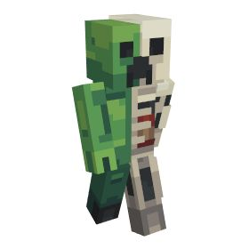
Skull Reaper
— The Undying Terror
Skull Reaper is a cursed warrior, a skeleton risen from the depths of forgotten catacombs. With hollow eyes burning with green fire and a body of bones bound by dark magic, he haunts the Island of Enigmas, spreading fear wherever he walks. Though lifeless, he cannot be stopped — death has already claimed him once.
Special Ability:
Every 90 seconds, Skull Reaper invokes the Curse of Undeath. For 12 seconds, whenever he takes fatal damage, his body instantly reforms, restoring 50% of his HP instead of dying. During this state, his attacks drain life from enemies, healing him with every strike. This makes him incredibly difficult to finish off and a nightmare for those who try.
Equipment:
Cursed Scythe — a weapon that slices both body and soul.
Bone Fragments — sharp projectiles torn from his own form, thrown at distant foes.
Skull Reaper is the perfect choice for players who enjoy dark, relentless combat. He is not the fastest, but his immortality and life-draining powers make him a brutal force that slowly grinds his enemies into dust.
-
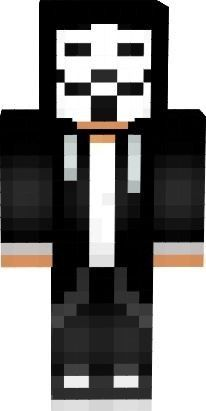
Cyber Phantom
— Master of Digital Magic
Cyber Phantom is a genius of cyberspace, a hacker who merges with the digital world. He can infiltrate any system, control machines, and create virtual illusions to confuse his enemies. On the Island of Enigmas, he wields his computer magic to unleash chaos on anyone who stands in his way.
Special Ability:
Every 90 seconds, Cyber Phantom activates Cyberstorm. For 15 seconds, he becomes invisible to enemies and can simultaneously strike multiple opponents with digital pulses. During this state, his attacks deal double damage (x2), and he is immune to all traps and magical effects.
Equipment:
Cyber Gloves — allow him to hit enemies with powerful energy pulses.
Chaos Laptop — a device for hacking, creating illusions, and remotely controlling machines.
Cyber Phantom is the perfect choice for players who enjoy strategic combat, battlefield control, and the magic of technology. With him, any enemy can fall victim to digital chaos without even realizing where the threat came from.
-
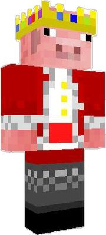
Techno Blade
— Crowned Force of Technology
Techno Blade is the second most powerful hero on the Island of Enigmas, a master of advanced technology and combat. Wearing his legendary crown, he channels immense power, boosting his attacks and enhancing his abilities with a techno surge. No enemy can withstand the overwhelming might and precision of this technological warrior.
Special Ability:
Every 60 seconds, Techno Blade activates Crown Overdrive. For 12 seconds, his damage output skyrockets, his speed increases, and all his abilities are enhanced. During this time, his attacks can pierce defenses and deal devastating effects to bosses and elite enemies alike.
Equipment:
Legendary Crown — amplifies strength, speed, and tech powers.
Techno Blade — a high-tech sword that channels energy into every strike.
Energy Modules — grants additional boosts to all abilities and elemental attacks.
Techno Blade is the perfect choice for players who crave overwhelming power, advanced combat skills, and the thrill of controlling a near-unstoppable hero.
-
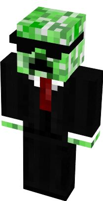
Cool Creeper
— Master of Time and Evasion
Cool Creeper is a sly and enigmatic hero on the Island of Enigmas. Known for his unmatched agility and cunning, he can manipulate the flow of the game itself. With a single clever move, he can skip entire challenges, leaving enemies stunned and allies in awe.
Special Ability:
Once per game, Cool Creeper activates Level Skip, instantly bypassing 3 levels in a row. During this time, he is untouchable and immune to all traps and attacks. This ability makes him invaluable for players looking to breeze through the toughest challenges without losing momentum.
Equipment:
Shadow Cloak — allows him to vanish from enemie's sight.
Time Shards — mystical objects that bend time, enabling his level-skipping power.
Cool Creeper is perfect for players who love strategy, speed, and clever shortcuts. When he's in action, even the hardest levels become simple stepping stones.
-

Steve
— The Beginning of Every Journey
Steve is the first hero every player meets on the Island of Enigmas. Though he starts with humble abilities, his courage, adaptability, and determination make him the foundation of every adventure. With each challenge, he grows stronger, learning new skills and unlocking hidden potential.
Special Ability:
Steve's Adaptive Spirit passively increases his strength and speed as he progresses through levels. While not the most powerful at the start, his versatility allows him to handle a variety of challenges and enemies, making him the perfect starter hero.
Equipment:
Basic Sword — reliable for melee combat.
Wooden Shield — offers initial protection against attacks.
Explorer's Backpack — holds essential items and supplies for survival.
Steve is ideal for players just starting their journey, offering a balanced and flexible playstyle. He embodies growth, perseverance, and the spirit of adventure.
-
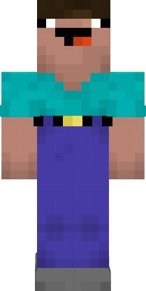
Duel Steve
— The Swift Challenger
Duel Steve is the upgraded version of the original hero, Steve, faster, luckier, and more agile. With unmatched reflexes and keen instincts, he takes on the Island of Enigmas with greater efficiency, striking enemies before they even realize he's there. His combination of speed and luck makes him a formidable force in any battle.
Special Ability:
Duel Steve's Rapid Strike allows him to move and attack 30% faster than the original Steve. Additionally, his luck boosts the chances of finding rare items, critical hits, and dodging traps. This makes him perfect for players who value agility and opportunistic play.
Equipment:
Swift Blade — a faster, sharper sword for lightning attacks.
Light Shield — provides quick defense without slowing movement.
Explorer's Satchel — enhanced to carry more rare items and treasures.
Duel Steve is ideal for players who love speed, strategy, and the thrill of lucky victories. With him, timing and reflexes are everything.
-
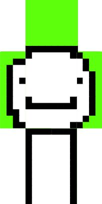
Dream
— The Relentless Force
Dream is a hero of extraordinary power on the Island of Enigmas. With attacks 2.5 times stronger than the average hero and a speed 1.5 times faster, he dominates every battlefield. His presence alone strikes fear into enemies, and his relentless combat style makes him one of the most formidable warriors in the game.
Special Ability:
Dream's Overdrive Assault temporarily amplifies all his stats, increasing damage and speed even further for a short burst. During this state, his attacks can overwhelm multiple enemies at once, making him perfect for tackling bosses or clearing the toughest levels.
Equipment:
Power Gauntlets — amplify every strike with explosive force.
Swift Boots — enhance speed and maneuverability.
Battle Armor — provides strong defense while maintaining agility.
Dream is ideal for players who crave raw power, unstoppable speed, and the thrill of dominating every fight.
-
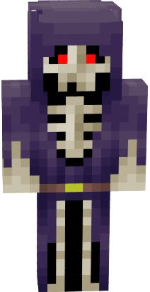
Scary Skeleton
— The Terror of the Shadows
Scary Skeleton is a frightening presence on the Island of Enigmas. With hollow eyes glowing in the dark and bones that rattle menacingly, he strikes fear into all who cross his path. His very appearance can cause enemies to hesitate, giving him a deadly advantage in battle.
Special Ability:
Every 90 seconds, Scary Skeleton activates Bone Fright, sending waves of fear through nearby enemies for 10 seconds. During this time, enemies move slower, their attacks are less accurate, and Scary Skeleton deals increased damage. His terrifying aura makes him a nightmare for all opponents.
Equipment:
Haunted Bones — throwable projectiles that pierce and scare enemies.
Cursed Scythe — a weapon that combines strength with fear, dealing devastating melee damage.
Eerie Amulet — amplifies his fear aura and strengthens his attacks.
Scary Skeleton is perfect for players who enjoy instilling terror and dominating enemies with psychological warfare.
-
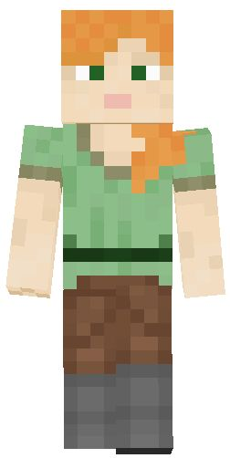
Alex
— The Agile Adventurer
Alex is a swift and fearless hero on the Island of Enigmas. With 1.5 times the speed of a normal hero, she can outmaneuver enemies and strike before they even react. Her agility makes her a versatile fighter, capable of handling multiple challenges with ease.
Special Ability:
Alex's Rapid Dash allows her to move and attack faster than most opponents for a short period, dodging traps and landing precise strikes. Her speed advantage makes her perfect for players who value mobility and tactical play.
Equipment:
Twin Daggers — light, fast weapons for quick melee attacks.
Agility Boots — enhance movement speed and reflexes.
Explorer's Satchel — carries essential items while keeping her mobile.
Alex is ideal for players who enjoy fast-paced combat, clever maneuvers, and striking quickly before enemies can respond.
-
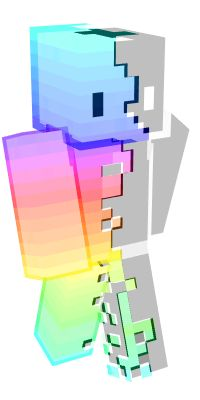
Ghost King
is a mysterious and fearsome hero who rules the shadows of the Island of Enigmas. Half ethereal and half royal, he drifts between worlds, striking terror into his enemies with ghostly powers and an aura of dread. His spectral form allows him to bypass defenses and slip through obstacles, making him an unpredictable and deadly force.
Special Ability:
Ghost King's Phantom Dominion allows him to turn fully intangible for 10 seconds, becoming immune to damage while phasing through walls and enemies. During this time, his attacks deal double damage and apply a chilling effect that slows enemies.
Equipment:
Crown of Shadows — boosts ghostly energy and strengthens spectral attacks.
Phantom Blade — a sword that drains life energy from enemies with each strike.
Ethereal Cloak — makes the Ghost King harder to detect and enhances his phasing ability.
Ghost King is perfect for players who enjoy stealth, intimidation, and haunting their opponents with unstoppable ghost powers. He thrives in ambushes, surprise attacks, and outsmarting foes with clever movement.
-
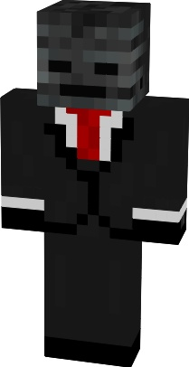
General Wither
— The Undead Commander General Wither is the terrifying leader of the skeletal legions. Born from ancient darkness, he commands armies of wither skeletons and crushes his enemies with overwhelming force. His presence on the battlefield inspires allies and spreads fear among opponents, making him one of the most dangerous tacticians on the Island of Enigmas.
Special Ability:
General Wither's Legion Summon calls forth waves of wither skeletons to fight at his side. Every summoned minion weakens nearby enemies with the deadly Wither Effect, slowly draining their health. Additionally, General Wither gains a defense boost while his army is active, making him harder to defeat.
Equipment:
Wither Crown Helm — enhances summoning power and boosts resistance against magic attacks.
Commanding Greatsword — a massive blade infused with wither energy that spreads corruption with each swing.
Bone Armor — heavy skeletal armor that reduces damage and reinforces his authority on the battlefield.
General Wither is ideal for players who love commanding armies, overwhelming enemies with numbers, and using dark powers to dominate every fight. He's a true strategist and a force of destruction.
Magical Creatures
-
Bandit Donkey
— The Sneaky Companion
Bandit Donkey is a mischievous creature with a love for shiny things and secret stashes. He has a knack for slipping behind enemies unnoticed, stealing their valuables, and bringing them to his master. His loyalty may be questionable, but his skills are unmatched when it comes to treasure hunting.
Special Powers:
Loot Boost — increases the main hero's chances of finding rare items, doubling the rewards from chests and enemies.
Bandit's Escape — once per battle, the donkey distracts enemies with a loud bray, giving the hero time to dodge or escape.
Hidden Satchel — allows the hero to carry extra potions or rare loot.
Lore: Long ago, this donkey was a thief's mount. When his master vanished, the animal inherited his sly tricks and now roams the world, forever searching for treasures.
-
Mega Axolotl
— The Healing Titan
Mega Axolotl is a gigantic, glowing amphibian who radiates pure healing energy. Legends say his scales contain the essence of eternal youth. With his kind nature, he shields allies from harm and restores life with the waters of his domain.
Special Powers:
Life Surge — gradually heals the hero during combat. Water Blessing — increases resistance to fire and lava by 30%.
Guardian Flow — when the hero's health drops critically, Mega Axolotl unleashes a healing wave, instantly restoring a chunk of health.
Lore: Born in the deepest underground lakes, Mega Axolotl was revered as a living fountain of life by ancient civilizations. He now aids only those pure of heart.
-

Diamond Key
— The Treasure Unlocker
The Diamond Key is a mystical being forged from enchanted crystal. It hovers beside the hero like a loyal spirit, glowing brightly whenever hidden treasures are near. More than just a tool, it is a protector and guide.
Special Powers:
Crystal Unlock — opens sealed doors, chests, and even magical barriers. Diamond Skin — grants +20% defense to the hero at all times.
Treasure Sense — alerts the hero when rare loot or hidden passages are nearby.
Lore: Forged by diamond priests in forgotten times, the Key is said to contain a fragment of the Diamond World's heart, giving it both life and power.
-

Bone Warrior
— The Undead Guard
Bone Warrior is a reanimated knight who swore eternal loyalty to those strong enough to command him. He marches tirelessly into battle, clattering bones and swinging his cursed blade, shielding his master from harm.
Special Powers:
Death Guard — absorbs part of the incoming damage aimed at the hero.
Wither Blade — infuses ther Blade — infuses the hero's attacks with the "wither effect", slowly draining enemies' health.
Unholy Resilience — when the hero's health is low, Bone Warrior temporarily boosts their armor by 40%.
Lore: Once a fallen general, he rose from his grave when the darkness spread. Bound by honor, he seeks a master worthy of his blade.
-
Mushroom Alien
— The Fungal Invader
Mushroom Alien is a strange lifeform from another galaxy, blending alien intelligence with fungal spores. Though odd and unpredictable, it enhances the hero with surreal powers, spreading confusion and chaos among enemies.
Special Powers:
Spore Infusion — grants the hero poison damage on every strike.
Toxic Cloud — occasionally releases a spore cloud, slowing and confusing nearby enemies.
Energy Symbiosis — increases stamina regeneration, allowing the hero to use abilities more often.
Lore: Legends say his spores fell from a meteorite, taking root in the soil of the Island of Enigmas. Ever since, he has sought hosts to spread his alien hive.
-

Defender of the Diamond World
— The Eternal Guardian
Forged from pure crystal, the Defender of the Diamond World is a massive protector that embodies strength and resilience. His glowing body shines with unbreakable energy, and his presence inspires courage in allies.
Special Powers:
Diamond Aegis — creates a protective barrier around the hero that absorbs heavy damage for 10 seconds.
Armor Blessing — increases the durability of all weapons and armor by 25%.
Diamond Pulse — once per battle, releases a shockwave that knocks back enemies and stuns them briefly.
Lore: The last guardian of the Diamond World, he was created to protect the realm's core from invaders. Only a chosen hero can call upon his strength.
-

Cosmic Alien
— The Starborn Wanderer
The Cosmic Alien is a traveler from the farthest reaches of space, wrapped in stardust and cosmic energy. His strange powers bend time and space, giving the hero otherworldly speed and precision.
Special Powers:
Cosmic Flux — increases the hero's movement speed and critical strike chance.
Warp Shift — allows the hero to teleport short distances instantly.
Time Distortion — once in a while, slows down enemies around the hero for a few seconds, giving them a deadly advantage.
Lore: A wanderer who drifts between galaxies, he arrived on the Island of Enigmas chasing an unknown signal. He now shares fragments of his cosmic wisdom with his chosen ally.


Choose Your Adventure!
Our game is free to explore, but you can unlock extra heroes, magical animals, and powerful spells with special game passes. Build your adventure the way you like!
Pricing Tiers Example:
Free Access - Explore the world, meet characters, and enjoy basic gameplay.
Hero Pack - $4.99 - Unlock unique heroes with special abilities.
Animal Pack - $3.99 - Summon magical creatures to fight by your side.
Spell Pack - $2.99 - Gain access to rare and powerful magic.
Ultimate Bundle - $9.99 - Get everything at once: all heroes, animals, and spells!
Start your journey today and make your adventure truly legendary!